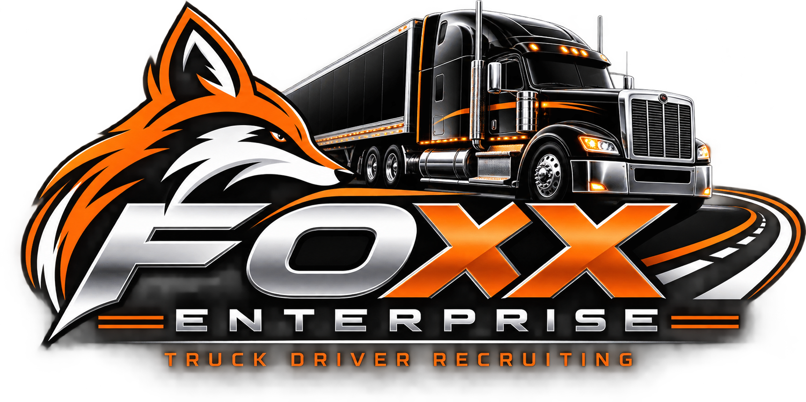

💰
Commission-Based Earnings
Earn a commission for qualifying driver placements. Advertised commissions range from $300 to $2,500 per hired driver, depending on the placement and applicable commission terms. Earnings are not guaranteed.

JOIN THE FOXX ENTERPRISE RECRUITING TEAM
Help truck drivers connect with trucking opportunities that fit their experience, pay goals, and home-time needs — while building your own commission-based recruiting opportunity.
Apply to Become a RecruiterWe believe truck drivers deserve to be treated like people, not numbers. Join a team focused on helping drivers find opportunities that work for them.
Earn a commission for qualifying driver placements. Advertised commissions range from $300 to $2,500 per hired driver, depending on the placement and applicable commission terms. Earnings are not guaranteed.
Connect with drivers who have already applied. Help pre-qualify them and find trucking positions that match their needs.
All you need is a phone or another way to make calls so you can communicate with drivers and follow up with them.
Use a computer to review leads, help drivers complete applications, track follow-ups, and stay organized.
Recruit from home or wherever you work best. No office is required for this opportunity.
Organize your work around your schedule and goals. Consistent follow-up and communication help keep drivers moving through the process.
Foxx Enterprise provides recruiting resources, training, and support to help you understand the process and stay organized as you work with drivers.
There Is Room for Advancement! Start as a recruiter, build your skills, gain experience, and work toward greater opportunities as you grow with our team. We want motivated people who are ready to learn, improve, and build their future.
If you're motivated, organized, and enjoy communicating with people, take the next step and submit your recruiter application.
Apply to Become a RecruiterThis is a commission-based 1099 independent-contractor opportunity. Earnings are not guaranteed and depend on qualifying placements and applicable commission terms.
Interested in becoming a truck driver recruiter? Here are answers to common questions about working with Foxx Enterprise.
Previous recruiting experience can be helpful, but being organized, communicating well, and being willing to learn are important.
This is a 1099 commission-based opportunity. Commissions may range from $300 to $2,500 per hired driver, depending on the applicable placement and agreement. Confirm the current commission terms before starting.
Leads are provided from drivers who have already applied, so cold calling is not required as part of the described process.
You need a phone to communicate with drivers and a computer to manage leads, applications, and recruiting tasks.
Yes. This opportunity is designed for remote work, allowing flexibility in how you organize your schedule while handling your recruiting responsibilities.
You may contact drivers who have applied, pre-qualify candidates, help drivers complete applications, coordinate orientations, and communicate with carrier hiring teams.
Payment timing and commission eligibility depend on your recruiter agreement. Confirm the payment schedule and placement requirements with the team.
Yes, the opportunity is described as an independent contractor position. Review the agreement and tax responsibilities before accepting.
Training and ongoing support are available to help you learn the recruiting process and manage applicants.
Complete the recruiter application form to provide your information and get started.
Apply to Become a Recruiter